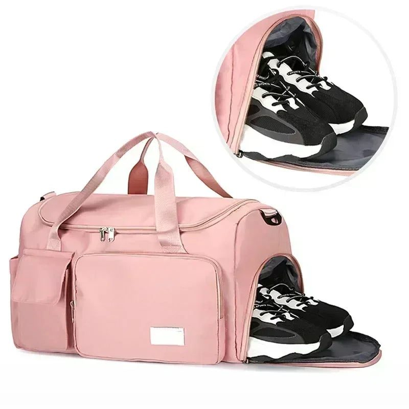
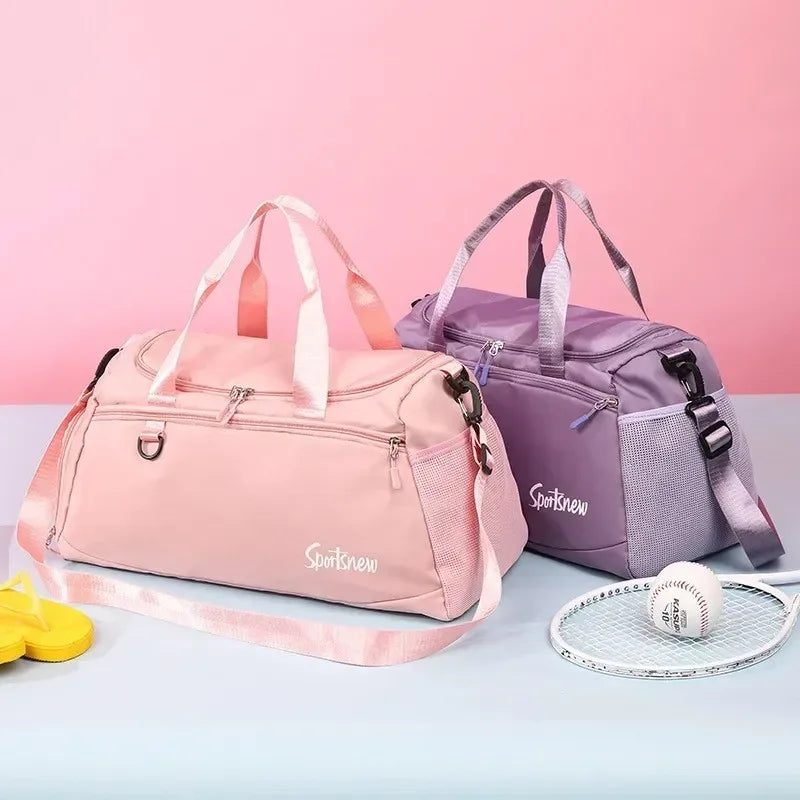

From Lahore to Islamabad on the M2 or Karachi to Hyderabad on the M9, long drives go better with the right kit. Here is a practical packing list for Pakistani families.
Road trips are a big part of Pakistani family life. Families drive from Lahore to Islamabad for weekends, from Karachi to Hyderabad for weddings, from Peshawar to Swat in summer and from Multan to Lahore for Eid. The motorways have made many journeys faster and smoother, but long drives with children, elders and luggage still need preparation.
A well-packed road trip kit makes the journey comfortable, safe and stress-free. This guide covers the essentials.
Before any long trip, check the car or get it serviced. Look at tyre pressure, including the spare, engine oil, coolant, brake fluid and wipers. Make sure the AC works properly, especially in summer. Keep the car's documents, licence and M-Tag on the motorway, plus some cash for tolls in case the tag fails. Download offline maps for routes with weak signal, such as parts of the northern areas.
Each traveller should have a small bag within reach, not in the boot:
A set of small refillable travel bottles is very useful for hand wash, sanitiser, shampoo and lotion, especially if you will stay at a hotel or with relatives. Smart travel bags with separate shoe compartments keep dirty shoes away from clean clothes.
Service areas on the motorways offer food, but they can be crowded and expensive. Pack snacks such as biscuits, dry fruit, sandwiches and fruit. Keep a flask of chai for the adults and a cooler of water and juice. Avoid heavy, oily food before driving, which causes drowsiness. Carry a small bag for rubbish and dispose of it properly at stops; never throw litter from the car.

Children get bored quickly on long drives. Pack a small bag of activities: colouring books, a travel game, a tablet with downloaded cartoons and headphones. Play car games like spotting number plates from different cities. Plan stops every two hours so they can stretch and use the washroom. A neck pillow helps them sleep comfortably.
Every car should carry a basic safety kit for longer trips:
Wear seatbelts in the front and back. Children should use car seats where possible.
Follow speed limits, which are strictly enforced on Pakistani motorways. Stay in the left lane unless overtaking. Rest every two hours; fatigue causes many accidents. In winter, dense fog on the M2 and M3 often leads to closures, so check updates before leaving and avoid early morning drives in fog season. Never use your phone while driving.

Pack heavy items at the bottom and lighter bags on top. Keep the safety kit and spare tyre accessible. Use a travel organiser or a foldable bag for snacks and essentials. You can find many such items at www.trenducts.pk/collections/travel-essentials, including travel bottle sets and bags with shoe compartments.
Motorway service areas are spaced at regular intervals and offer fuel, food, prayer rooms and washrooms. Plan which ones you will stop at, especially with elders who need comfortable washrooms and time for namaz. On the M2 between Lahore and Islamabad, the Bhera rest area is a favourite halfway break. Fill fuel before the tank drops too low, since some stretches have long gaps between stations, and stretch your legs at every stop.
In the last half hour, tidy the car: collect wrappers, pack away chargers and wipe sticky hands. Arriving at a relative's house or a hotel with an organised car makes unloading easy and the start of the visit much calmer.
A long drive across Pakistan can be one of the best parts of a trip. Prepare the car, pack personal and safety essentials, bring food and entertainment, follow motorway rules and organise the boot well. With a good kit, the journey becomes as memorable as the destination.